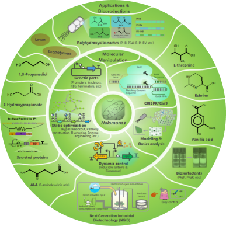
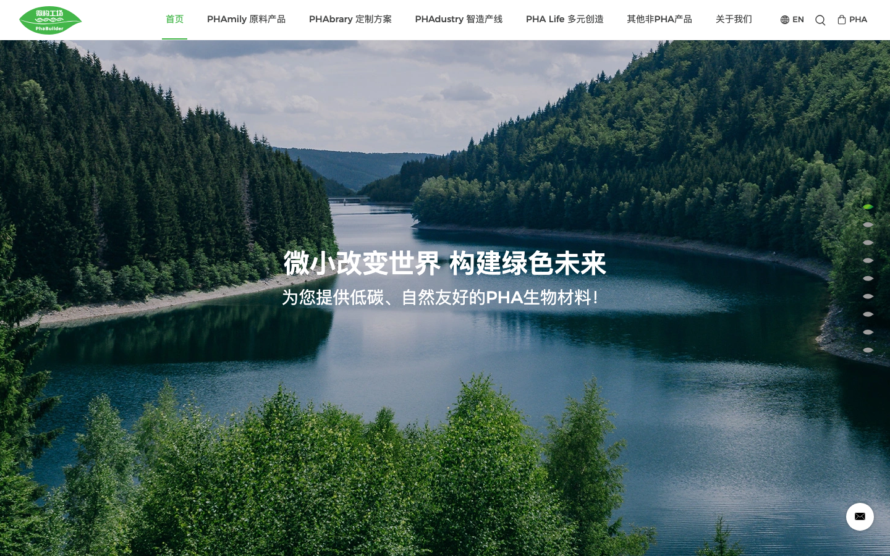
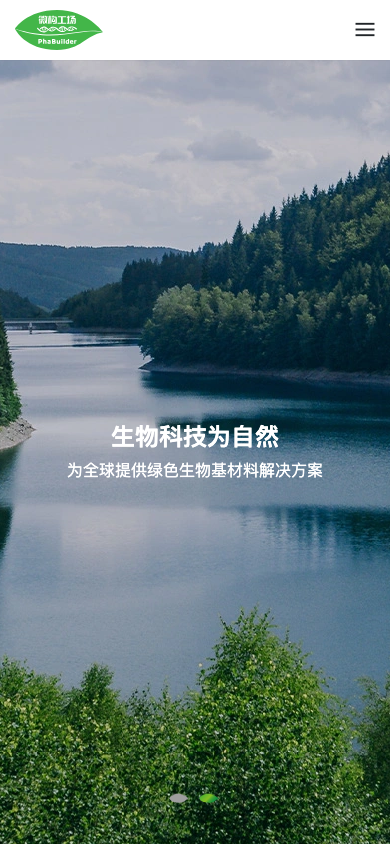

生物材料 · 合成生物学 · 可持续制造
OBSERVED 2026.08.23
PHABUILDER / CASE 003FROM MICROBES TO A GREEN FUTURE
让材料，
走进绿色生活
微构工场把一个专业的 PHA 生物材料业务，编排成一条从自然愿景、技术体系、应用方案到产品采购的绿色说服路径。
原站首页的自然场景与文案仅作内部研究引用；所有企业数字均保留来源边界。
01 / CASE SNAPSHOT
一个材料品牌，
用四种语言连接四类人
PHABuilder 的首页不是简单介绍“我们生产什么”，而是把科研、材料应用、工业产线和终端生活拆成四个可以被记住的品牌词。
先让用户相信绿色生活值得被创造
湖泊、森林和绿色遮罩把低碳、自然友好放到产品参数之前，先建立情绪方向。
MISSION / EMOTION再解释 PHA 为什么特殊
用“自然的馈赠”、低碳、亲和、自然降解等词，把技术名词翻译成用户能理解的价值。
MATERIAL / MEANING把研发到量产画成四步路
PHAmily、PHAbrary、PHAdustry、PHA Life 形成从组合、应用、产业化到商业化的记忆钩子。
STRATEGY / SYSTEM最后出现可点击的产品规格
PB3000G、PB3430G、PV3000G 以卡片形式落地，让品牌叙事最终能指向真实产品。
PRODUCT / ACTION02 / THE 4P ECOSYSTEM
用一个词根，
把复杂业务变简单
四个 P 不是四个孤立栏目，而是一个从“材料组合”到“绿色生活方式”的连续叙事。卡片可点击、可聚焦，中心能力始终不变。
PHA从微生物
到绿色未来
01PHAmily浩瀚 PHA 库到绿色未来
挖掘超过 100 亿种组合，先建立材料家族。
↗ 02PHAbrary定制方案把性能与健康、美妆、3D 打印等应用匹配。
↗ 03PHAdustry智造产线用生物制造与工业 4.0 承接全球产业化。
↗ 04PHA Life多元创造让材料离开工厂，进入千家万户的生活。
↗可迁移条件
当一个企业既有底层技术，又有多种应用和产业化路径时，把栏目命名成同一词根的“家族”可以降低记忆成本；每个词仍必须配一条清晰的用户任务，不能只做品牌造词。
03 / FULLPAGE CHOREOGRAPHY
九个全屏章节，
每一屏只完成一个任务
桌面端使用 fullPage.js 把首页编排成 9 个章节，右侧圆点提供进度感；案例页保留章节逻辑，但改为自然滚动和可操作时间轴。
CHAPTER 01 · HERO
先让用户相信绿色未来
自然湖泊与白色大字把品牌使命置于第一视线，技术、产品和企业数字随后出现。
- 场景先于规格
- 主张写在 HTML 中
- 轮播不应成为唯一入口
01 / 09
实现建议
借用 fullpage 的节奏，不继承它的阅读限制
桌面可使用 scroll-snap 或粘性章节导航；移动端取消 fullPage.js，保留自然文档流。视频必须静音默认、可暂停并提供 poster，动效要服从 reduced-motion。
04 / MATERIAL PROOF
技术内容不该变成
一面术语墙
原站用“PHA，大自然的慷慨馈赠”作为标题，再用示意图和三段短文解释低碳、亲和、自然降解。它做对了“先翻译，再深入”。
CORE PRODUCT / PHA
把科学事实翻译成用户能记住的价值
当产品涉及生物材料、合成生物学或复杂性能时，先用一个自然语言隐喻建立理解，再将技术定义、应用边界和证据链接放在下一层。
查看原站产品入口 ↗原站自述1–3 年自然环境消解周期
原站自述1%传统塑料所需时间比例

BIOMATERIALAPPLICATION MAP
05 / MANUFACTURING EVIDENCE
把产线能力，
拆成四个可感知的优势
“简易、节能低碳、高效、非粮”是原站对生物制造体系的四个压缩词。每张卡片只承载一个判断，再配两句说明。
简易
极端微生物底盘带来培养设备的极致简化，页面自述设备成本降低 30%。
原站自述 / 需验证口径节能低碳
页面强调常温常压减少 50% 以上能耗，并展示废水循环利用。
原站自述 / 需验证基线高效
页面将代谢路径优化、产率提高 80% 与生产时间降低 30% 放在同一证据卡片。
原站自述 / 需验证样本非粮
把秸秆、餐厨废料等非粮碳源放入生产叙事，连接技术能力与资源循环。
原站自述 / 需说明适用范围06 / PRODUCT ACTION
故事最后要能
落到一个产品动作
热销产品区把专业材料型号变成可扫描的卡片：一个产品名、一组 mol% 信息、一张正面图和一个进入详情的入口。
PRODUCT 01 · P(3HB)
PB3000G
产品卡片采用“规格短标签 + 材料正面图 + 详情入口”的三层结构，让科研采购者可以快速确认自己看的是什么。
进入原站产品详情交互提示
hover 可以改变图片，但点击、聚焦和方向键必须能完成同一切换。
07 / LIVING PROOF
新闻不是填充，
而是品牌正在发生的证据
原站用十条新闻承接大会、认证、ESG、合作和科研动态。新闻区的价值不在数量，而在于让“绿色未来”有日期、有事件、有下一步。
08 / RESPONSIVE AUDIT
桌面是章节剧场，
手机要先保证能读和能走
原站在桌面端用 fullPage.js 强化“剧场感”，在 990px 以下销毁 fullPage 实例；这个方向是对的，但首屏标题和导航仍需要继续校正。


KEEP
值得复用
- 绿色品牌色与自然图像一致
- 技术、应用、产线、终端分层
- 每屏一个标题与一句解释
- 产品区提供真实采购入口
REFINE
需要重构
- HTML 语言标记改成 zh-CN
- 移动端标题不应被裁切
- fullPage 需提供自然滚动回退
- 视频、统计与第三方脚本要可控
09 / AI INSTRUCTIONS
给 AI 的不是绿色滤镜，
而是一条证据链
以下条件可以直接带入新的生物材料、合成生物学或可持续制造网站，不复制微构工场的品牌事实。
自然场景负责定调
当环保价值需要先被感知时，用自然场景 + 一句使命 + 一个下一步动作；不要把技术参数塞进 Hero。
情绪先于比较
词根系统负责降复杂度
当业务有研发、应用、制造、商业化四层时，用统一词根建立家族，并给每个词配清楚的用户任务。
栏目之间有同一底层能力
每屏一个沟通任务
全屏滚动只适合展示章节关系；标题、正文、按钮和媒体必须在自然滚动和无脚本时仍可读取。
内容适合阶段性阅读
优势卡片写条件，不写口号
成本、能耗、产率、生产时间等数字必须说明基线、样本、时间和验证方；AI 不得根据行业惯例补数字。
展示效率或 ESG 指标
产品区是行动桥
材料名称、共聚比例、正面图和详情链接同时出现；hover 只强化记忆，不能成为查看规格的唯一方式。
品牌最终要承接采购
10 / SOURCE ARCHIVE
让下一次参考，
从可复核素材开始
案例保留原站 HTML、CSS、JS、关键场景图、PHA 图标、产品图、新闻图与桌面/手机截图。完整来源见 manifest.md。